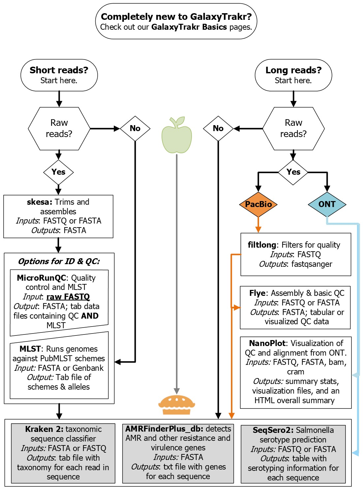

Our goal is to assist those new to bioinformatics and GalaxyTrakr with using the wealth of tools available there. We include text and video tutorials and example
input and output data for tasks ranging from the basics of using the GalaxyTrakr interface to quality assessment of long read and short read sequences to tools that
will allow you to get more information out of your sequences.
If you have any questions or ideas for us to further develop this website, please don't hesitate to email us.

GalaxyTrakr is getting an interface refresh! Be on the lookout for a tutorial showing how to use the more streamlined interface soon.
Tools and workflows to be added to this site include workflows for the analysis of Oxford Nanopore Technologies longread sequences.
Tutorials relating to the submission of sequences to NCBI and the use of the One Health Enteric package will be added in the near future.